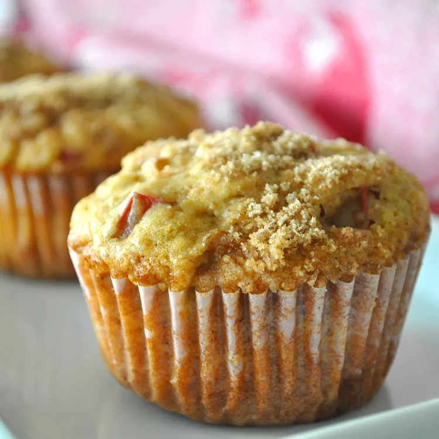

Rhubarb Muffins

Description
These moist rhubarb muffins have a crunchy, sweet cinnamon-sugar topping. They taste great on their own with no extra butter or jam.
Ingredients
For Muffins
- Flour: 2 and half cups
- Baking Soda: 1 teaspoon
- Baking Powder: 1 teaspoon
- Salt: 1/2 teaspoon
- Brown Sugar: 1 cup
- Buttermilk: 1 cup
- Vegetable Oil: 1/2 cup
- 1 Large Egg
- Vanilla Extract: 1 teaspoon
- Diced Rhubarb: 1 and half cups
- Chopped Walnuts: 1/2 cup
For Streusel
- White Sugar: 1/3 cup
- Melted Butter: 1 tablespoon
- Ground Cinnamon: 1 teaspoon
Steps
- Preheat the oven to 350 degrees F (175 degrees C). Grease two 12-cup muffin pans or line with paper cups.
- To make the muffins: Stir flour, baking soda, baking powder, and salt together in a medium bowl. Beat brown sugar, buttermilk, oil, egg, and vanilla in a separate bowl with an electric mixer until smooth. Pour in dry ingredients and mix by hand just until blended. Stir in rhubarb and walnuts. Spoon batter into the prepared cups, filling almost to the top.
- To make the streusel: Stir sugar, melted butter, and cinnamon together in a small bowl; sprinkle about 1 teaspoon streusel on top of each muffin.
- Bake in the preheated oven until muffin tops spring back when lightly pressed, about 25 minutes. Cool in the pans for at least 10 minutes before removing them.